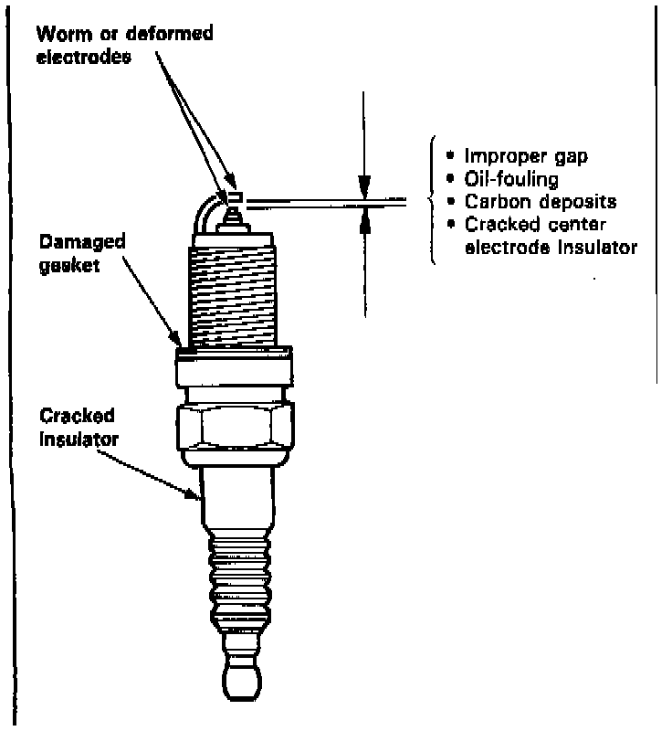
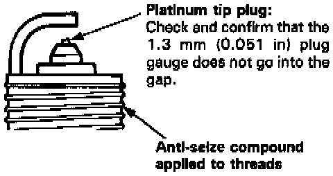

Spark Plug: Testing and Inspection
INSPECTION
1. Inspect the electrodes and ceramic insulator for:
Burned or worn electrodes may be caused by:
- Advanced ignition timing
- Loose spark plug
- Plug heat range too low
- Insufficient cooling
Fouled plug may be caused by:
- Retarded ignition timing
- Oil in combustion chamber
- Incorrect spark plug gap
- Plug heat range too high
- Excessive idling/low speed running
- Clogged air cleaner element
- Deteriorated ignition coil
2. Replace the plug if it is fouled or worn. Do not use spark plugs other than those listed.
- For all normal driving.
PFR6G-11 (NGK)
PK2OPR-L11 (Nippondenso)
- For hot climates or continuous high speed driving.
PFR7G-11 (NGK)
PK22PR-L11 (Nippondenso)
3. Make sure that the 1.3 mm (0.051 in) plug gauge does not go into the gap for the platinum tip plug. If the gauge goes into the gap, do not attempt to adjust the side electrode; replace the plug with a new one.

Electrode Gap:
Standard: 1.O mm - 1.1 mm (0.039 - O.043 in)
Service Limit: 1.3 mm (0.051 in)
4. Screw the plugs into the cylinder head finger-tight, then torque them to 18 Nm (13 lb ft)
NOTE: Apply a small quantity of anti-seize compound to the plug threads before installing each plug.